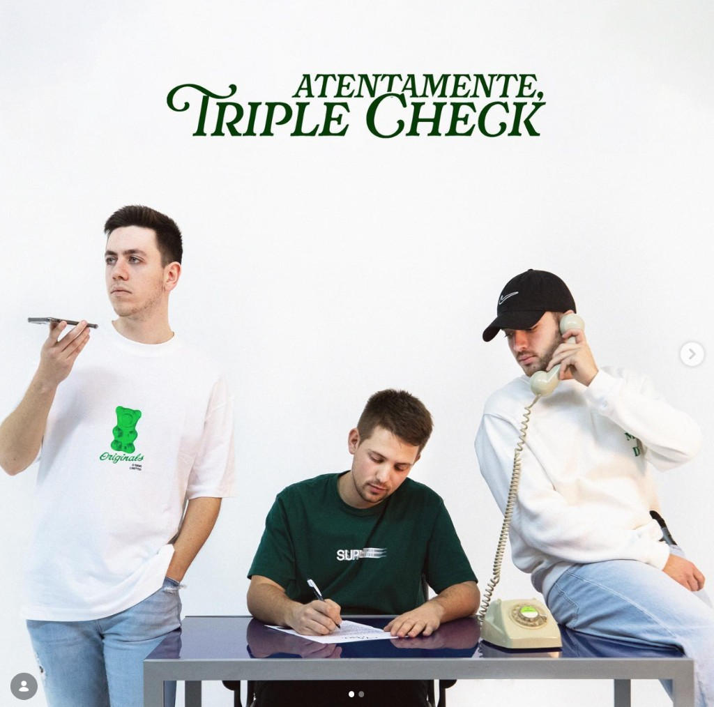
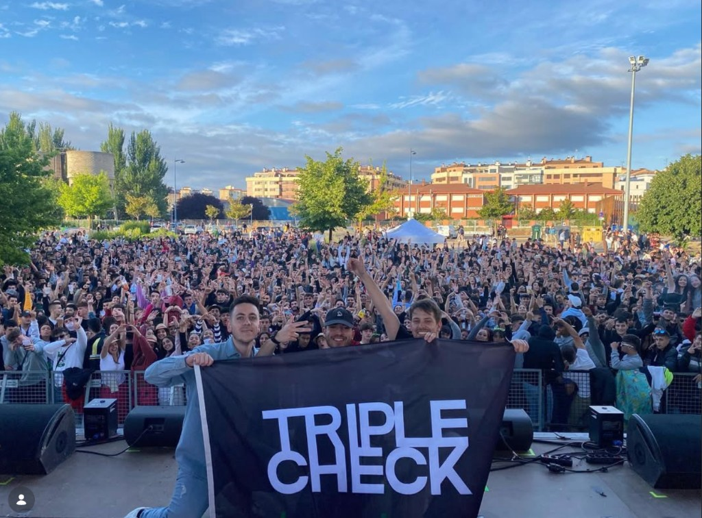
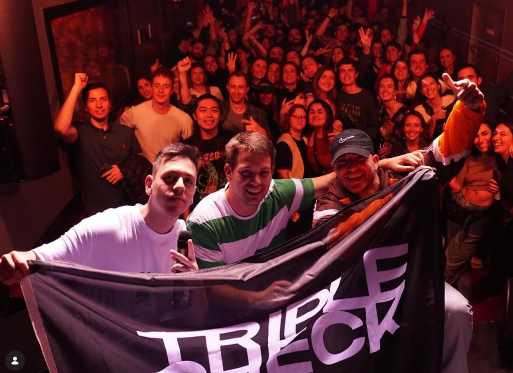

Triple Check

Triple Check is Felipe Basurto, Miguel Ferrer, and Diego Garrido from Burgos. We met at school (Jesuitas). From May 2020 onward we wrote and recorded at home and put songs on streaming platforms.
None of us came in with a musical education or a budget. We learned writing and production as we went, with a mic, an interface, and time in a room. That first batch became the debut EP Sabemos (five tracks), then a run of singles, then the Atentamente, Triple Check EP (2023).
In the band I focus on production, mixing, and lyrics. Miguel Ferrer sings and produces. Diego Garrido sings. We tend to write from improvisation at the mic and then shape the track.
The music
Spanish pop-rock, closer to El Canto del Loco, Pignoise, or Despistaos than to a straight rap act. Hooky guitars that sat well on Spanish streaming playlists around 2020-23. Songs about nights out, relationships, and looking back at our twenties.
The single Checkout (on Spotify with the rest of the catalog) features Safree, with production by Johnatan Pons. Atentamente, Triple Check (2023) is the release that best represents us. Spotify has the full catalog.
Listings, venues, and ticket hubs
A few public links (venues, old bills, ticket hubs), not a full history:
- Burgos (bar Carabás): entradas / concierto (Tomaticket) · ficha del local · video (YouTube)
- Madrid, Sala Vesta: Sala Vesta evento · Madrid en Vivo · Sala Vesta (web) (C/ Barquillo, 29) · video (YouTube)
- Barcelona, Sidecar: sidecar.es (Plaça Reial, 7)
- Valladolid, Porta Caeli (with Iskender): Sala Porta Caeli, shared bill with Iskender (Valladolid; spelling also Iskander on some socials)
- Madrid (bill with SANTAS, 2023): Café la Palma, TRIPLE CHECK + SANTAS · Café la Palma on Tomaticket
Spotify (by the numbers)
All-time streams on Spotify, per the artist catalog in the app, are past 1.7M plays, with several tracks in the six figures. Three of us, no label.
Live
We have played gigs around Spain: smaller rooms, a few outdoor stages, shared bills. The photos are from that. An early one was in Burgos at bar Carabás (Tomaticket) (video). We have also played Sala Vesta in Madrid (video), Sidecar in Barcelona (Plaça Reial), and Sala Porta Caeli in Valladolid on a night with Iskender. Later, a Madrid date with SANTAS at Café la Palma (Feb 2023, event page). We still change the set and book shows when we can.


Booking: the links below, or the email on my home page.
Links
- Spotify (artist): Listen on Spotify
- Live, Burgos (Carabás): YouTube
- Live, Madrid (Sala Vesta): YouTube
- Venues and listings: see Listings, venues, and ticket hubs above